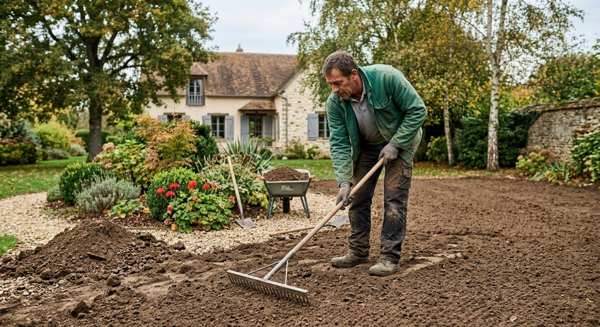
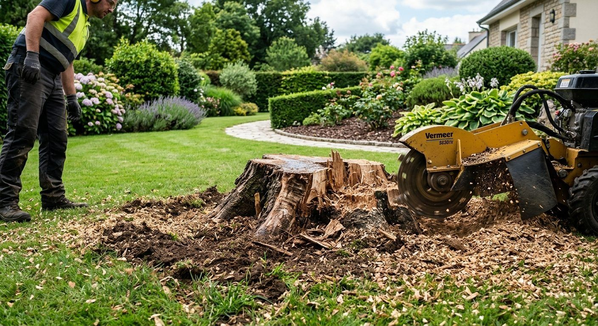
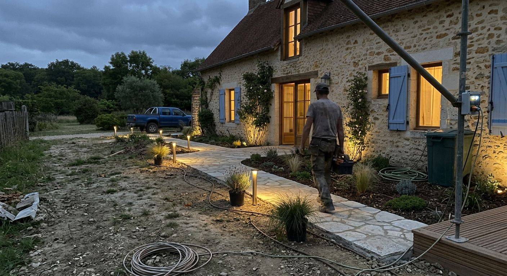
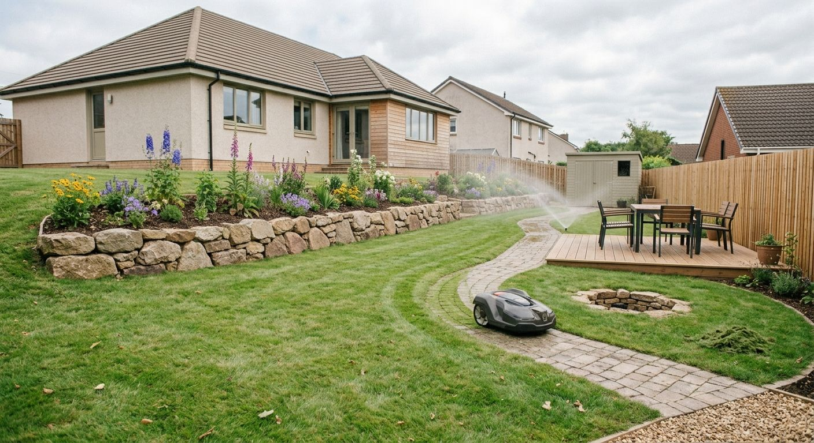

Nos prestations
Deux façons de prendre soin de votre extérieur
Créer ou transformer un espace, ou le garder en forme toute l'année : choisissez par où commencer.



Aménager
Préparer, construire, planter
- Terrassement et nivellement. Reprise du terrain, décaissement, remblai, mise à niveau avant les travaux.
- Dessouchage. Retrait des souches pour libérer l'espace à aménager.
- Terrasses, allées et dallages. Bois, dalles ou pavés selon l'usage et le style de la maison.
- Maçonnerie paysagère. Murets, marches et soutènements en pierre.
- Plantations et création d'espaces verts. Massifs, arbustes et pelouse.

Entretenir
Un entretien régulier, un jardin net
- Tonte et entretien général. Pelouse, bordures et espaces verts remis en ordre.
- Taille de haies et d'arbustes. Taille propre, coupes ramassées.
- Élagage. Taille et abattage d'arbres.
- Évacuation des déchets verts. Chargés et emportés après intervention.

Un projet précis ?
Décrivez-nous votre terrain
Surface, contraintes, travaux souhaités : quelques lignes suffisent pour démarrer la discussion.
